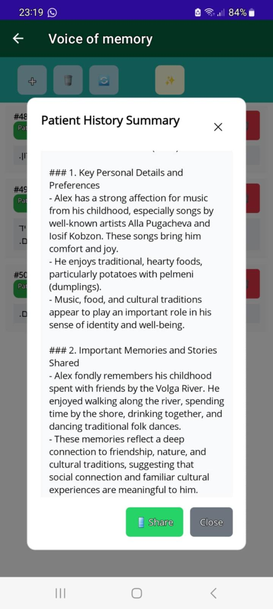
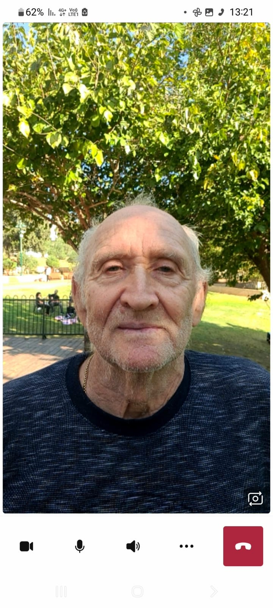

Repeated questions
He could ask the same question and not remember the answer.
Own Story

His symptoms changed everyday life for the whole family: memory loss, loss of interest, difficulty understanding time and place, trouble communicating, and fear of staying alone.
Requires Android 8.0 or higher for caregiver and patient.
Learn more about ToyraMy father Alex's problems
Alex asked the same questions again and again, could not reliably answer or dial calls, lost interest in activities, forgot his birthday and address, did not know how to get home, and did not agree to stay home alone.
He could ask the same question and not remember the answer.
He could not always answer calls or call family members himself.
He could forget the day, time, address, or how to return home.
He looked for his wife constantly and resisted staying home alone.
Why Toyra Exists: Traditional solutions were not enough. Toyra was built to change this reality.
Common problems
What Toyra Does
Toyra combines safety, communication, reminders, entertainment, and AI assistance in one Android app flow for the patient and caregiver.
Patient SOS and condition alarms reach the caregiver quickly.
Check the patient location and receive snapshots when needed.
Calming prompts and mental speech support help reduce anxiety and isolation.
Toyra also helps preserve LO memories and life stories before they disappear.
Outbound calls can be started by voice recognition or simple on-screen buttons.
Family-shared videos, messages, and photos. Personalized interaction based on life history.
Two modes
Caregiver and Patient are linked using the patient's phone number. The patient gets a simple front door for help. The caregiver gets remote visibility and action tools.
Swipe to see more screens




Real-World Impact
In daily use, Toyra has shown:
This is based on real-life usage, not simulations.
Install Toyra and connect patient and caregiver phones today.
Download Toyra now